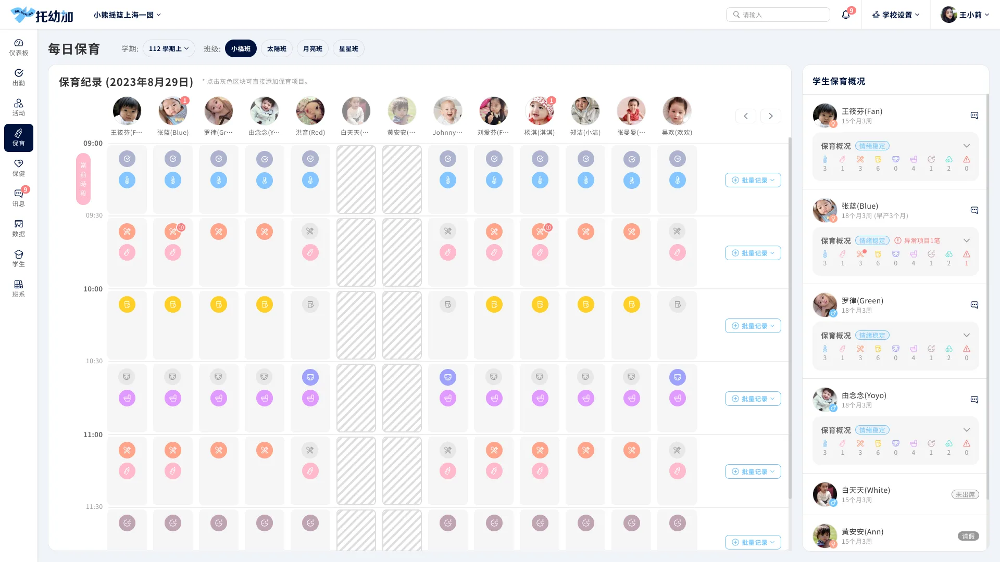

01背景與目標
從自家系統，走向開放給更多園所的平台
好學原本的系統，只服務自家園所和部分園所。公司的商業策略轉向平台化，要讓托幼加開放給更多外部園所使用，所以決定從 1.0 大改版成 2.0。
改版要讓系統管理員、校方、老師、醫護人員和家長打開系統時，都只看到自己需要的內容，用起來更直覺、更省力。
- 1依角色拆分介面與權限每個角色只看到、只能操作跟自己有關的內容。
- 2讓管理者處理校務更省力特別是每學期的換班、調人。
- 3手機上第一眼就看到重點老師和家長打開小程序，首屏就是最重要的資訊。
02挑戰
角色多、邊界模糊，功能一路往上疊
托幼加的使用者分好幾層，每一層要做的事完全不同：
- 系統管理員管理整個平台、機構與帳號權限
- 校方管理者管理老師、課程、教室等學校事務
- 老師記錄學生的保育、保健與每天的工作
- 家長查看孩子在學校的紀錄，和學校聯繫
在中國的托育機構，教職員又細分成保育人員、教學人員、醫護人員，各自負責不同的事。
例如餵藥，就只有醫務人員能做。同一個系統，不同角色要看到的內容、要關注的事都不一樣。
1.0 用起來的困擾
1.0 是兩三年前早期團隊做的，當時缺少系統架構和資訊架構的討論。我自己用的時候也常踩坑，常想：為什麼這個介面會一直讓人出錯？
- 功能分類、各角色的分層功能、各角色該看到的介面都很混亂。新功能一出來就往上疊，系統越來越難學、難用。
- 資料同步容易出錯：改了 A，以為 B、C 會跟著更新，其實得自己記得一個個去改，不然系統就會出現錯誤。
- 管理的維度很複雜：自家園所、非自家園所，還有集團本身，這些角色在舊系統裡都定義得很模糊。
- 大家打開系統看到的東西太多太雜，還會看到不該看的內容；有些介面的呈現和用法，也不適合實際的使用情境。
- 每學期的換班、調人，管理者要花很多力氣。
- 好學有自己的教案和教材，要能授權給各校，再讓各校自由排課。
03解法
先定角色與邊界，再替每個角色設計介面
我的角色與合作方式
我是團隊唯一的設計師。我和 PM 在台灣負責規劃，工程團隊在中國負責開發。
- 和 PM 一起規劃梳理既有功能、訪談使用者，定出功能分類、資訊架構，以及角色的定位、分層與邊界。
- 跨海和工程溝通透過會議和設計文件上的註解，說明每個畫面想呈現的方式。
- 全部的介面設計管理後台 Web、老師端與家長端小程序。
盤點既有功能、訪談使用者
我和 PM 先把 1.0 既有的功能逐一梳理，同時訪談既有的使用者：大約 5～6 間園所，主要是園長。再依照訪談結果，逐步定出功能分類、資訊架構，以及每個角色的定位、分層和邊界。角色那麼多，這一段花了非常多時間溝通。
先釐清：誰在用、要做什麼
改版的第一步，是把每一種使用者的使用目的和使用裝置整理清楚。這決定了後面每個功能該放在哪個平台、給誰看。
關鍵決策①：把好學定位成「系統平台商」
權限最難切的，是自家園所、非自家園所和集團之間的關係。討論到最後，我們認為它們其實都只是「服務的單位」：把好學的角色提升為系統平台商，不管是不是集團裡的園所，都是平台的客戶。
用「平台商與客戶」的關係去切分權限和管理，原本糾纏在一起的角色，一下子單純多了。
當時其實找不到可以參考的做法：同樣是集團等級、自己開發系統，又要同時服務自家和外部園所的案例，我們沒有找到。
重新規劃 2.0 架構
依照「平台商與客戶」的關係，新系統拆成三個後台，再加上老師端與家長端小程序。每一層只管自己該管的事，權限的邊界就清楚了。
管理平台底下所有機構單位的帳號，以及平台提供給機構的教學課程內容與資源。
- 機構與帳號管理
- 教學課程內容
- 教學資源
掌握旗下每間園所的狀態和各項事務，做綜效評估，讓更多人一起檢核各園所的經營狀況。
- 各園所狀態總覽
- 綜效評估
- 經營狀況檢核
處理園所內部的人、事、物，以及孩子和老師的日常行政，同時是孩子、學校與家長之間的溝通管道。
- 儀表板
- 出勤
- 保育
- 保健
- 教學課表・排課
- 訊息
- 數據
- 學生
- 學校設置
- 主頁
- 作息紀錄
- 寶寶日報
- 訊息
- 更多
- 主頁
- 寶寶作息
- 寶寶日報
- 訊息
- 我的
關鍵決策②：一個總覽儀表板，加上各角色的小儀表板
中國托育機構的分工非常細，和台灣差很多，但系統也要讓台灣的園所使用。不同的人代表不同的工作內容，所以我們把工作內容拆開：一個大的儀表板關注整體，再由不同的小儀表板關注各自負責的事。
校方管理者、班級、老師、醫護人員，各自看到自己需要關注的指標和待辦。切換看看：
關注：全園今天的出勤、病假、師生比、活動完成率，以及招生和家長滿意度。
關注：班上每位學生今天的狀況，家長交辦、托藥等特殊事項直接標在學生卡片上。
關注：自己班級的出勤與記錄完成度、待辦列表，以及學期行事曆。
關注：托藥處理只開放給醫務人員：依時段列出今天要餵藥的學生，記錄給藥並留下簽名。
教案授權與排課
好學把自有的教案和教材授權給每一間學校，各校再依自己的需要，自由安排不同班級要上的課程。
每學期換班、調人，不再費力
Web 管理後台主要給管理者使用，負責校務、行事曆等工作。最花力氣的是每學期的換班、調人，所以學生列表設計了批次處理與篩選，勾選一批學生就能一次變更。
小程序：老師端與家長端
小程序是這次改動最大的部分。老師和家長打開第一屏就看到最重要的資訊，常用功能則集中到常用工作列。
04成果
約 40 間園所上線，找不到功能的狀況明顯變少
2.0 已上線，約 40 間托育機構在使用。從使用者的問題回饋和老師的反應來看：
- 找不到資訊、不知道該點哪裡、該按什麼的狀況，明顯變少了
- 資訊變得簡單明瞭
- 權限分清楚了，不會看到不該看的內容
- 介面的呈現和用法，更符合實際的使用情境
怎麼上線
既有客戶直接從舊系統換到新系統。換之前，我們先辦了一場發布會，介紹新系統多了哪些資源、優化了哪些地方，再透過教育訓練教大家怎麼操作。
還沒解決的事
教育訓練的成本並沒有因此降低。系統本身真的很龐大，功能多、角色多，就算介面更清楚了，要學的東西還是很多。
如果繼續做下去
我希望做到：使用者一進來，不需要我們教，就知道怎麼用。所以下一步最重要的是新手引導，以及各個功能、各種情境的引導。
像排課這種比較複雜的功能，操作面向很多，最需要引導來幫使用者建立初步的認識。這也是我在 JarviX 做過的事：依使用者所處的階段，提供不同的引導。
還有一個當初沒預料到的好處：因為用「平台商與客戶」的關係切分，平台也能交付給其他園所，讓他們自己管理旗下的兩三間園所。
改版前後
同樣是記錄學生的保育狀況。拖曳中間的把手，比較 1.0 和 2.0：

1.02.0